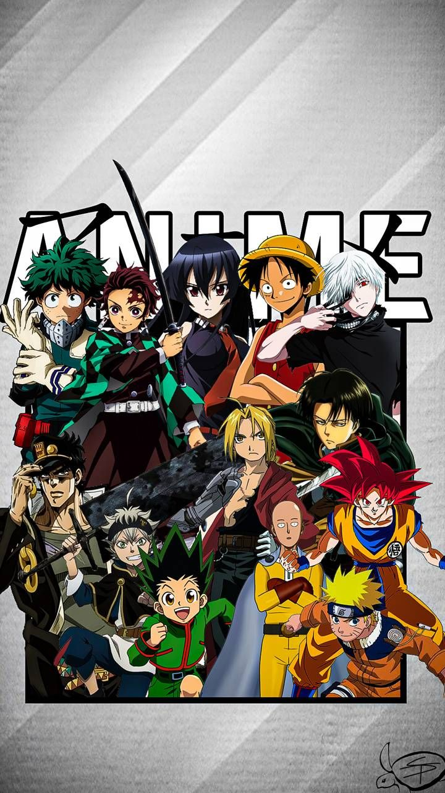
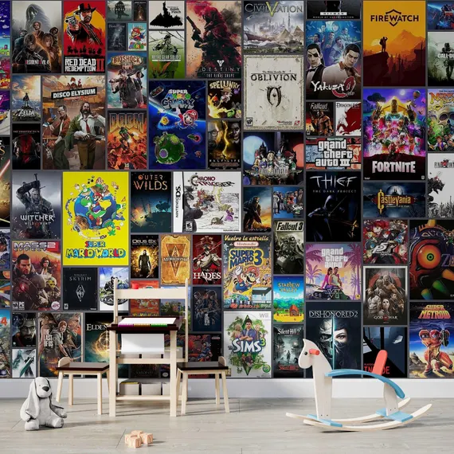

My Hobbies
What I love to do
My Interests & Passions
In my free time, I enjoy activities that help me relax, stay healthy, and explore new experiences. My hobbies reflect my interests in fitness, entertainment, and personal growth. Whether I'm running to clear my mind, listening to music to unwind, watching anime to enjoy great storytelling, or gaming to challenge myself strategically, these activities bring balance to my life as a Computer Engineering student.
Hobby Gallery

